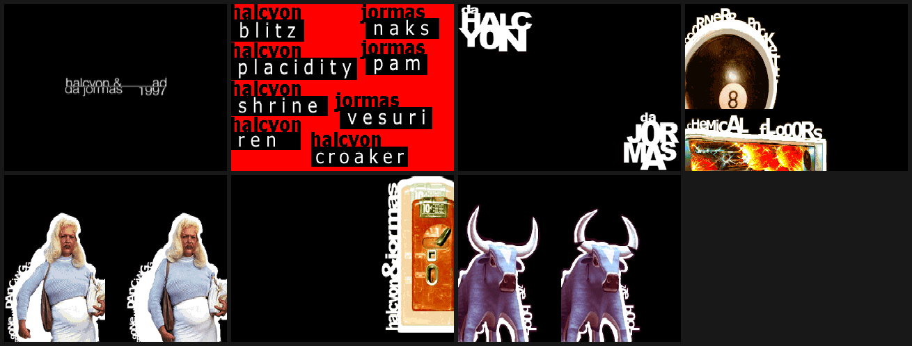
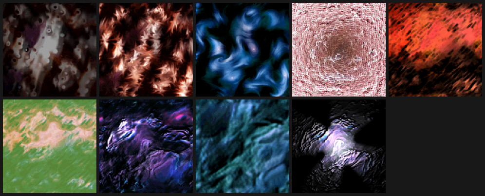
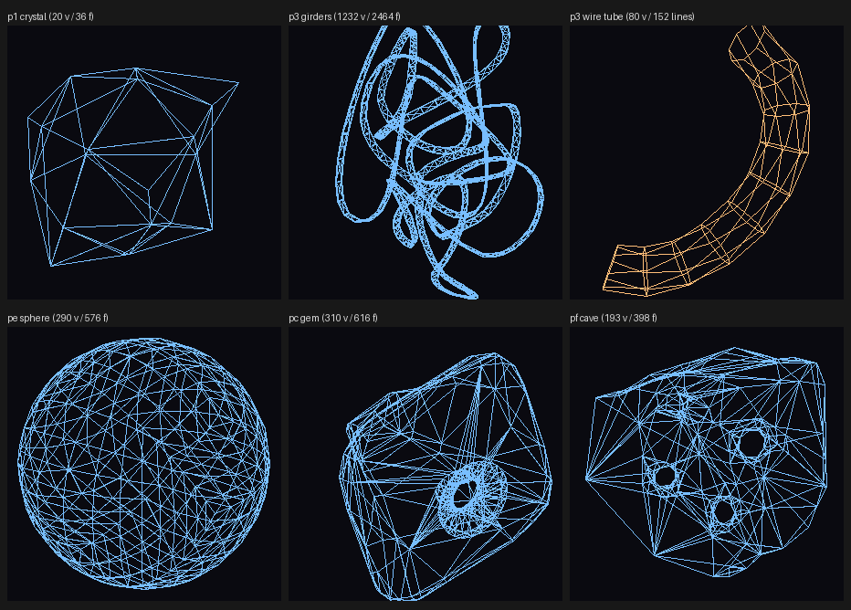

Saint is a DOS demo by Halcyon & Da Jormas (Assembly 1997 final).
It uses mode 13h (320x200, 256 colours) and a 32-bit protected-mode flat
program (PMODE). This document explains what is on screen, how each
effect works, and what the JS port reproduces exactly. The assembly side
is in WRITEUP-asm.md; the
long-form process log is docs/PROCESS.md.
Every part of the demo is the same engine, a "halcyon super kolmedee enkine (tm)" (the banner string in the EXE): a tunnel renderer drawn through a 41x26 grid of warped rays, plus a depth-sorted list of 3D objects drawn on top. All looks come from a handful of 256x256 textures, a palette fade, and a few meshes.



row_times.json and
order_times.json give the exact times used.Times are music seconds in the port
(scenes/index.js).
| Part | Start | What it is |
|---|---|---|
| intro | 0 | smeared footage, 142 frames, 2x upsampled |
| part 1 | 14.222 | "saint" tunnel with translucent crystals |
| part 2 | 35.111 | orange tunnel, textured star |
| part 3 | 78.222 | space tunnel with girders and wire tubes |
| D | 113.778 | metaballs through the grid |
| A | 120.889 | textured landscape |
| B | 128 | cylinder with a cone of lines and shards |
| intro again | 135.111 | repeat of the intro |
| E | 145.963 | textured sphere inside a box |
| F | 182.326 | textured cave lit by a rotating star |
| C | 211.417 | plane tunnel melting into a sphere, gem, dancer, final picture |
| end | 262.3 | final picture held 10 s (700 ticks) |
docs/PROCESS.md section 12 lists older times on a
different clock (intro 0-21.333, P1 to 42.222, P2 to 81.778, P3 to
117.333, D to 124.444, A to 131.556, B to 138.69, intro 2 to 153.236, E
to 189.599, F to 218.69, C to 262.3). The two lists disagree (the older
one is on a different clock), so the table above follows the port
code.
The screen is cut into 8x8 blocks, so only 41x26 vertices need real
work. Per vertex the code rotates the grid point by the camera matrix,
adds the camera position, casts the ray from the camera through it, and
calls a warp that returns (u, v, shade) of
the hit point. The rest is cheap interpolation.
// engine/tunnel.js
const P = [M0*x+M1*y+M2*z+O0, ...]; // grid point in world space
let r = warp(O, P, k); // -> [u, v, shade]
V[i] = Math.round(r * 65535); // 16.16 fixed point
blit8(out, V, tex, shade); // bilinear over each 8x8 block, then shade[z][tex[v][u]]The five warps (offsets in the program):
u = |atan2(...)|/pi*255, v along the
axis, with a sinusoidal wobble on the hit parameter t.sin(hx*w1)*w2 + cos(hy*w1)*w2 on t;
u,v = hit*0.16 + 128.u,v = hit*0.16 + 128, fog
63 - min(-600 t, 63).sqrt(190000)):
the camera is inside, u,v from the hit coordinates.The shade is a fog value 0..63 from the hit distance, so distant
parts of the tunnel go dark through the shade table. Two warps can be
morphed by blending their (u,v,shade) outputs in float32
(new*b + old*(1-b)), which is how the plane turns into the
cylinder in part 1 and the plane into the sphere in part C.
The sphere wobble reads a leftover float ([0x296b0]) in
the original; the port reproduces it as the constant 1042.643.
Footage stored as nibble RLE, upsampled 2x and smeared by two
table-driven filter passes (see the asm write-up, section 9). The frame
shown is floor(tick/7) mod 142. The palette is driven by
the same ISR blend as everywhere else.
A plane warp morphs into a cylinder warp (blendOn starts
at spline index 0x140 and lasts 500 ticks). 33 translucent
filter-triangle crystals and 33 flares are placed in a cluster that
rotates around Z by 0x4d9/65536 rad per tick. The camera
follows a Catmull-Rom spline (0x1f2c0) with a look-at matrix (0x15d91).
The palette A/B pulses (1023 - (cos(pulse)*511 + 511)), the
screen flashes black in the last rows of order 4 and fades to white from
order 5, row 0x30. Part 1 ends at order 5, row 60.
// parts/p1_tick.js, per tick
S.rot += 0x4d9; // cluster rotation
S.t1 += s; S.t2 += s; // camera speed rises while the ramp is openThe crystals are not alpha-blended: each pixel under a triangle is remapped through the 64-level filter table (asm write-up, section 3).
Cylinder-to-sphere tunnel, 50 dust glows from an LCG, and a
105-vertex / 206-face star whose vertices are
shapeA*w + shapeB*(1-w) with
w = 4*sin(3*sin(a)*cos(b)). The star is drawn with a
perspective-correct textured Gouraud rasteriser (0x1fefc), intensity
I = 128*(d.N)/|d|^2. A logo sprite is composited on
top.
A sphere-warp tunnel with a flat-shaded girder mesh (1232 vertices,
2464 triangles), three anti-aliased wire tubes (80 vertices, 152 lines
each in the figure) and 50 dust glows. Two camera paths A and B are cut
by a script table ([0x33c20]). Overlay sprites (the 8-ball
and "chemical floors" image, 0x189197) come on top. Each face has a glow
level that decays to a floor of 16 or 24.
A two-centre distortion is drawn through the same 41x26 grid
(formulas in parts/pd.js), so the "metaballs" are really
texture coordinates bent around two points. Text sprites appear on a
schedule. The grid is built after the blit, so each frame shows the grid
of the previous tick.
A textured Gouraud landscape (203 vertices, 353 faces) with a light
at [0x4950] = 192, the camera moving
t += 0.0173 per tick.
A cylinder warp without wobble, a grid cone made of Line
objects (anti-aliased wire) and filter-triangle shards.
A textured sphere clamped by an invisible box (half-size
[0x48c4]) with cumulative rotation, a grid cage and a bull
sprite overlay (0x1b88b5). The rotation is stateful:
the state depends on the whole frame history, so seeking replays from
the start of the part.
A textured cave (193 vertices, 398 faces) lit by a rotating glowing star, and a 1-bit overlay at the end.
A plane tunnel melting into a sphere (cross-fade by
1/1050 per tick after spline index 0x410), a gem (310
vertices, 616 faces) with five pentagon stars, 36 shards, a directional
sprite (0x296d8: one of 40 views chosen from atan2), a
dancer strip, and the final picture (image 0xcb4b9).
Pressing keys toggles warps ([0x41c4..c6]) and palettes
([0x419b..]). The strings in the EXE also contain decoys
such as ratavek.juu.
Differences against the Unicorn emulation of the original,
per 64000-pixel frame. These numbers are copied from
docs/PROCESS.md (sections 6, 7, 10, 11); the reference
snapshots are not present in this tree, so they were not re-run for this
write-up.
| Part | Differing pixels |
|---|---|
| intro | 0 |
| D | 0 |
| P3 | 0 (900 ticks of ISR also identical) |
| P1 | tunnel exact; whole frame 1 pixel off |
| P2 | tunnel 8 |
| B | 2 |
| E | 40-80 |
| C | 3-344 |
| F | 270-1500 |
| A | about 700 |
The textured-triangle rasteriser was validated on 40/40 and 160/177
triangles identical, the others differing by 1-3 pixels
(extended-precision rounding). Palettes were always equal. The FPU model
matters: the drawing stage runs in round-toward-zero with a 24-bit
mantissa (set by PMODE), and engine/texmap.js follows
that.
Objects and tables built at load time by the original
(tex.bin, shade.bin, filter.bin,
sprites.bin, objects.json) are exported from
snapshots, not regenerated.
17 ColoRIX images (RIX3, width and height as 16-bit
values, a 768-byte 6-bit VGA palette, then w*h pixels at
offset +778) are embedded in the EXE; tools/extract_rix.py
extracts them to site/assets/img. The nine 256x256 ones are
the tunnel textures, byte-exact matches of the per-part
tex.bin:
| Image offset | Part |
|---|---|
| 0x1f533d | P1 |
| 0x205647 | P2 |
| 0x225c5b | P3 |
| 0x1d4d29 | A |
| 0x1e5033 | B |
| 0xe15e3 | C |
| 0x215951 | D |
| 0x235f65 | E |
| 0x26692f | F |
Also byte-exact: part 2 overlay = 0x1a8bab, bull = 0x1b88b5, part D sheet = 0xf18ed, part 3 overlay = 0x189197, and the final picture starts with 0xcb4b9. Not confirmed: the part 1 overlay (14400 bytes, probably 0x1c85bf, 320x45), the intro overlay, the part C strip and sheet, and the part F overlay. There are no separate font assets; the text is part of the RIX pictures.
The music is an S3M module ("da tonemonob itch", 359368 bytes at EXE offset 0x115e03, 4 channels, three tunes mixed into one) played by libopenmpt. Credits found in the EXE: blitz code, shrine/placidity/croaker graphics, ren meshes, naks/pam/vesuri music, asmu player, tran PMODE.
The figures were rendered from the extracted assets by a throwaway script (not kept in the tree); the mesh figure leaves out the landscape (A) and part B meshes, because the B projection was degenerate and A too thin to read.